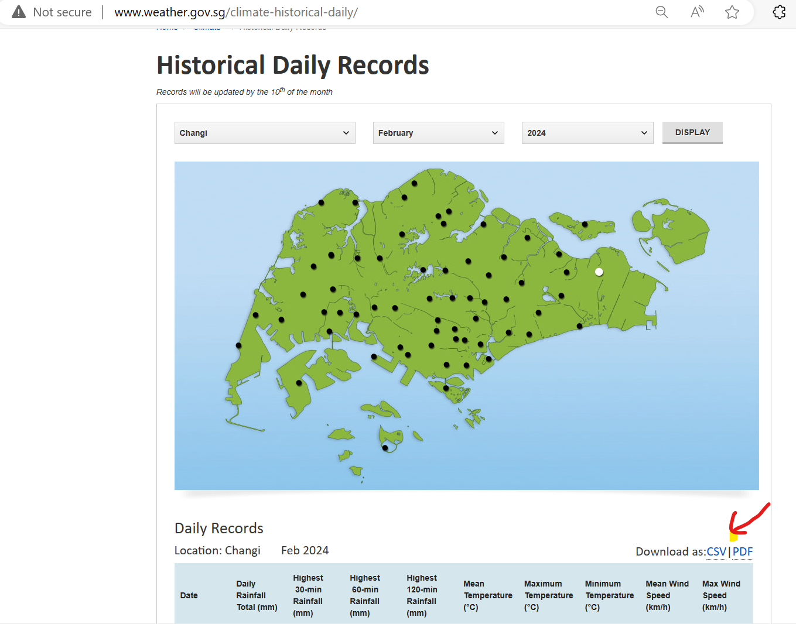
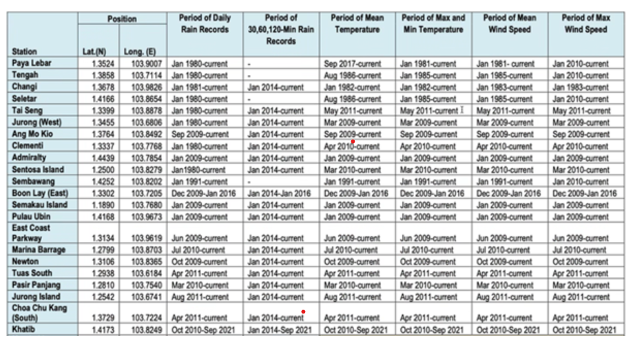
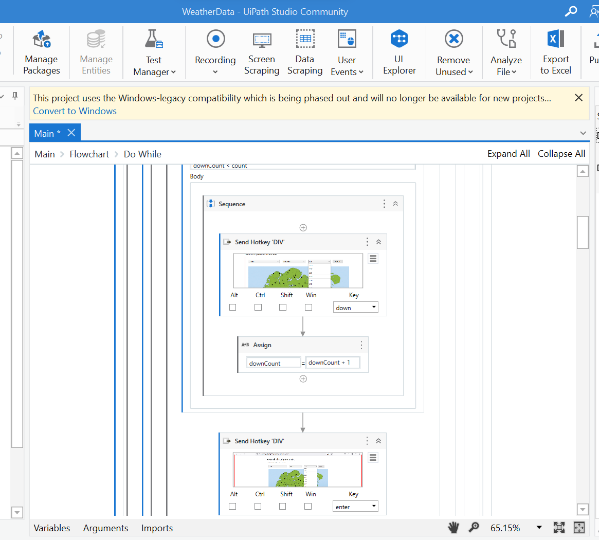
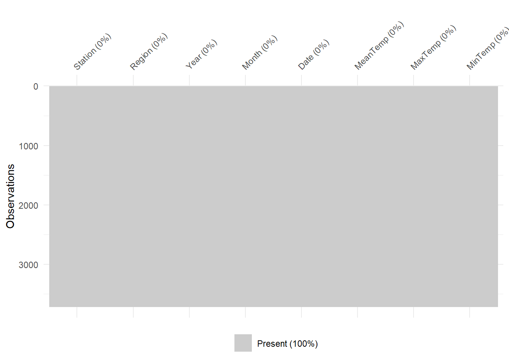
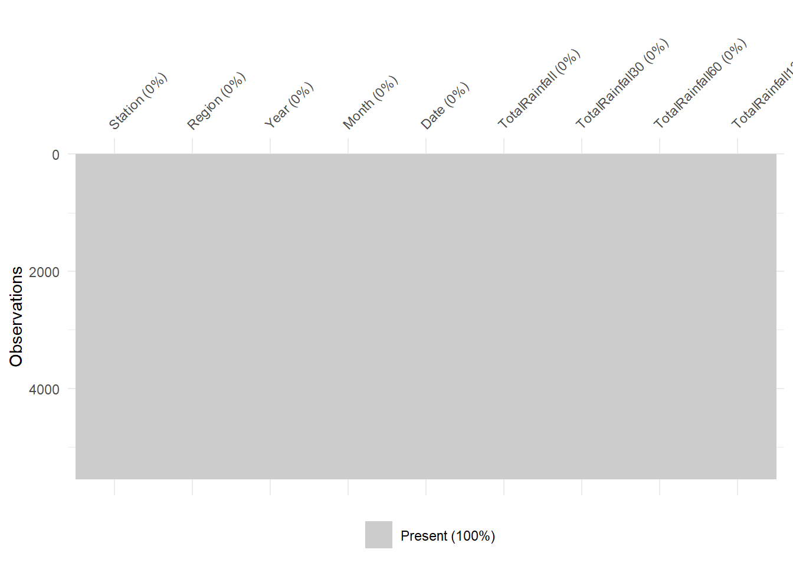
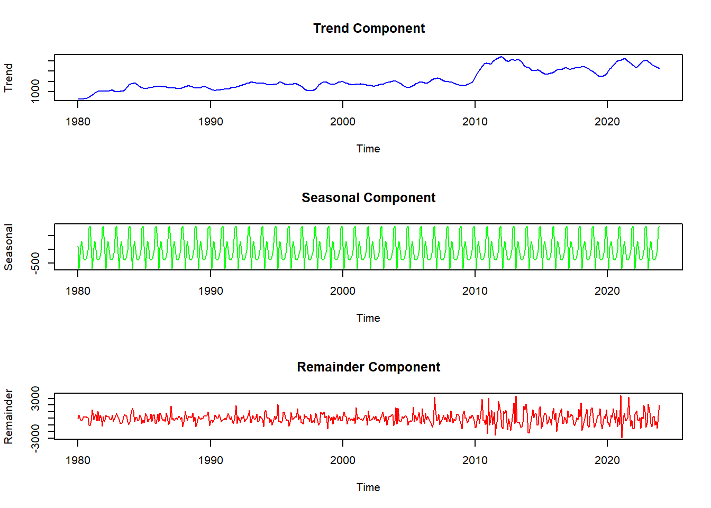

pacman::p_load(readr, tidyverse, plotly, ggplot2,
zoo, forecast, janitor, fs, visdat)Take-home Exercise 4: Prototyping Modules for Shiny Application
1 Overview
In this take-home exercise, we are required to select one of the modules of our proposed Shiny application and complete the following tasks:
To evaluate and determine the necessary R packages needed for our Shiny application are supported in R CRAN
To prepare and test the specific R codes that can be run and return the correct output as expected
To determine the parameters and outputs that will be exposed on the Shiny applications
To select the appropriate Shiny UI components for exposing the parameters determined above.
1.1 Project Details
Our team has decided to work on visualising and analysing historical weather data from Meteorological Service Singapore. We will create a R Shiny app with user-friendly functionalities, to effectively visualize and analyze weather data.
The R Shiny app will consist of the following sections:
Homepage tab: Users have an overview of the dataset used. Users will be able to locate the weather stations in Singapore via a map of Singapore and some interactivity elements.
EDA tab: Users can explore the distribution and trends of the weather information for specific time periods or stations or regions.
CDA tab: Users can use statistical analysis to confirm the trends of the weather information.
Time series forecast tab: Users can explore the time series forecast of temperature or rainfall by selecting the type of forecasting model, the period to forecast etc that they would like to use for univariate time series forecasting.
This exercise will focus on the last section - time series forecast.
2 Data Extraction
On the MSS Historical Daily Records page, we are able to select the weather station, month and year to display. After that, we can click on the CSV option to download the data.
For this project, we will analyse the historical temperature and rainfall data collected by MSS based on the 18 weather stations (Table 1).
The selected stations with complete datasets from 1980 onwards provide a long-term perspective on climate trends, which is crucial for accurate modelling and prediction. Automated instruments from 2009 enhance data reliability and allow continuous monitoring without manual intervention gaps.

As there are 42 years of monthly data to download for each station, my team has written a Robotic Process Automation script using UiPath software to download all the necessary data. In total, we have 5,552 CSV files downloaded.

3 Data Preparation
3.1 Installing R packages
The code below uses p_load() of the Pacman package to check if all the required packages are installed on the laptop. If they are, then they will be launched into the R environment.
| Package | Description |
|---|---|
| tidyverse | A collection of core packages designed for data science used extensively for data preparation and wrangling. |
| lubridate | For manipulating date-times. |
| janitor | For quick formatting of data frame columns. |
| fs | For retrieving a list of file names in our directory for import into R |
| zoo | For irregular time series of numeric vectors/matrices and factors manipulation |
| visdat | For checking missing values in a dataframe |
3.2 Importing data
Let’s read all the 5,547 CSV files downloaded for the 18 weather stations that have records from the year 1980 onwards.
dir_ls()function from the fs package in R to list filenames in our directory where we have saved the monthly historical records.map_df()function from the purrr package is used to iterate over each file in the directory.localeargument inread_csv()is to specify the encoding as Latin-1, as some of the headers contain special characters, like the degree symbol (°). The Latin-1 encoding ensures R can read and process such special characters.col_typesargument imports all columns as character data type.clean_names()of the janitor package converts into snake case and transliterates special characters such as the degree symbol (°) to ASCII.
filenames <- fs::dir_ls("data/weather/")
# Read all files and clean the column names
data <- filenames %>%
map_df(~ read_csv(.x,
locale = locale(encoding = "latin1"),
col_types = cols(.default = "character")
) %>%
janitor::clean_names()
)
glimpse(data)
Note
All the 18 weather stations have a total of 168,836 records.
The data shows that there are two sets of variables for mean, maximum, and minimum temperature records:
mean_temperature_c, maximum_temperature_c, and minimum_temperature_c
mean_temperature_a_c, maximum_temperature_a_c, and minimum_temperature_a_c
This might happen during clean_names() where there is a minor difference in the column names from different files.
It will be meaningful to also analyse weather data by region in Singapore. Hence, we also searched for each weather station’s region on public websites like the HDB website and data.gov.sg. Let’s import the region information now.
region <- read_csv("data/Region.csv")
glimpse(region)3.3 Data Wrangling
3.3.1 Remove extra columns
Let’s use the coalesce() function to copy the values from the second set of temperature values to the first set and then deselect the second set of columns. We are also not focusing on the wind speed variables, hence we will deselect the 2 variables on wind speed.
data$mean_temperature_c <- coalesce(data$mean_temperature_c,
data$mean_temperature_a_c)
data$maximum_temperature_c <- coalesce(data$maximum_temperature_c,
data$maximum_temperature_a_c)
data$minimum_temperature_c <- coalesce(data$minimum_temperature_c,
data$minimum_temperature_a_c)
data %>%
select(-c(mean_temperature_a_c,
maximum_temperature_a_c,
minimum_temperature_a_c,
mean_wind_speed_km_h,
max_wind_speed_km_h))
glimpse(data)3.3.2 Remove weird characters
There are some weird characters (‘097’) in the data frame. Let’s replace them with NA.
data <- data %>%
mutate_all(~ ifelse(. == "\u0097", NA, .))
glimpse(data)3.3.3 Tidy the data
Finally, let’s clean up the weather data and create a column for date, change the necessary columns to numeric, and shorten the column names for simplicity.
weather <- data %>%
mutate(station = station,
year = as.numeric(year),
Date = make_date(year = year, month = month, day = 1),
month = lubridate::month(Date, label = TRUE),
day = as.numeric(day),
daily_rainfall_total_mm = as.numeric(daily_rainfall_total_mm),
highest_30_min_rainfall_mm = as.numeric(highest_30_min_rainfall_mm),
highest_60_min_rainfall_mm = as.numeric(highest_60_min_rainfall_mm),
highest_120_min_rainfall_mm = as.numeric(highest_120_min_rainfall_mm),
mean_temperature_c = as.numeric(mean_temperature_c),
maximum_temperature_c = as.numeric(maximum_temperature_c),
minimum_temperature_c = as.numeric(minimum_temperature_c)) %>%
rename(
Station = station,
Year = year,
Month = month,
Day = day,
Rainfall = daily_rainfall_total_mm,
Rainfall30 = highest_30_min_rainfall_mm,
Rainfall60 = highest_60_min_rainfall_mm,
Rainfall120 = highest_120_min_rainfall_mm,
MeanTemperature = mean_temperature_c,
MaxTemperature = maximum_temperature_c,
MinTemperature = minimum_temperature_c
) %>%
subset(select = -c(mean_temperature_a_c,
maximum_temperature_a_c,
minimum_temperature_a_c,
mean_wind_speed_km_h,
max_wind_speed_km_h))3.3.4 Merge datasets
Let’s join the weather data with its region information using the common variable ‘Station’.
weather <- merge(weather, region, by= "Station")
glimpse(weather)3.3.5 Create subsets of data
Let’s create subsets of weather data for only Temperature or Rainfall and save them as RDS files for easy loading when we are developing for the subsequent analysis.
Temp_YM <- weather %>%
group_by(Station, Region, Year, Month) %>%
reframe(Date = Date,
MeanTemp = round(mean(MeanTemperature, na.rm = TRUE),1),
MaxTemp = round(max(MaxTemperature, na.rm = TRUE),1),
MinTemp = round(min(MinTemperature, na.rm = TRUE),1) ) %>%
distinct() %>%
ungroup() %>%
filter(!is.na(MeanTemp))
write_rds(Temp_YM, "data/temperature.rds")
Rainfall_YM <- weather %>%
group_by(Station, Region, Year, Month) %>%
reframe(Date = Date,
TotalRainfall = round(sum(Rainfall, na.rm = TRUE),1),
TotalRainfall30 = round(sum(Rainfall30, na.rm = TRUE),1),
TotalRainfall60 = round(sum(Rainfall60, na.rm = TRUE),1),
TotalRainfall120 = round(sum(Rainfall120, na.rm = TRUE),1)) %>%
distinct() %>%
ungroup() %>%
filter(!is.na(TotalRainfall))
write_rds(Rainfall_YM, "data/rainfall.rds")Let’s load the RDS and check for missing data in Temp_YM and Rainfall_YM.
Temperature <- read_rds("data/temperature.rds")
Rainfall <- read_rds("data/rainfall.rds")
vis_miss(Temperature)
vis_miss(Rainfall)
Temp_YM <- Temperature %>%
group_by(Year, Month, Region) %>%
reframe(Date = Date,
AveMeanTemp = MeanTemp,
MaxMaxTemp = MaxTemp,
MinMinTemp = MinTemp) %>%
distinct() %>%
ungroup() %>%
filter(!is.na(AveMeanTemp))
Temp_YM_allR <- Temperature %>%
group_by(Year, Month) %>%
reframe(Date = Date,
AveMeanTemp = round(mean(MeanTemp, na.rm = TRUE),1),
MaxMaxTemp = max(MaxTemp, na.rm = TRUE),
MinMinTemp = min(MinTemp, na.rm = TRUE)) %>%
distinct() %>%
ungroup() %>%
filter(!is.na(AveMeanTemp))
Rain_YM <- Rainfall %>%
group_by(Region, Year, Month) %>%
reframe(Date = Date,
TotRainfall = round(sum(TotalRainfall, na.rm = TRUE),1),
HighRainfall30 = sum(TotalRainfall30, na.rm = TRUE),
HighRainfall60 = sum(TotalRainfall60, na.rm = TRUE),
HighRainfall120 = sum(TotalRainfall120, na.rm = TRUE)) %>%
distinct() %>%
ungroup() %>%
filter(!is.na(TotRainfall))
Rain_YM_allR <- Rainfall %>%
group_by(Year, Month) %>%
reframe(Date = Date,
TotRainfall = sum(TotalRainfall, na.rm = TRUE),
HighRainfall30 = sum(TotalRainfall30, na.rm = TRUE),
HighRainfall60 = sum(TotalRainfall60, na.rm = TRUE),
HighRainfall120 = sum(TotalRainfall120, na.rm = TRUE)) %>%
distinct() %>%
ungroup() %>%
filter(!is.na(TotRainfall))4 EDA
Let’s take a look at how the temperature and rainfall changes over the past 40 years
4.1 Time series of temperature
gg <- ggplot(Temp_YM_allR, aes(x = Date, y = AveMeanTemp,
color = factor(Year))) +
geom_line(linewidth = 0.1) +
geom_point(aes(text = paste0("Year-Month:", Year, "-", Month,
"<br>MeanTemp:", AveMeanTemp, "ºC"))) +
labs(x = "Year", y = "Mean temperature (ºC)", color = "Year",
title = "Trend of Mean Temperature from 1982 to 2023",
subtitle = "Gentle trend line sloping upwards from 1994",
caption = "Data from Meteorological Service Singapore website") +
geom_smooth(method = "lm", formula = y ~ splines::bs(x, 3),
se = FALSE, color = "black") +
theme_minimal()
ggplotly(gg, tooltip = "text") %>%
layout(title = list(text =
paste0(gg$labels$title, "<br>", "<sup>",
gg$labels$subtitle, "</sup>"),
font = list(weight = "bold")),
showlegend = FALSE,
annotations = list(text = gg$labels$caption,
xref = "paper", yref = "paper",
x = 1000, y = 24,
xanchor = "right", yanchor = "top",
showarrow = FALSE)) 4.2 Time series of Rainfall
gg <- ggplot(Rain_YM_allR, aes(x = Date, y = TotRainfall,
color = factor(Year))) +
geom_line(linewidth = 0.1) +
geom_point(aes(text = paste0("Year-Month:", Year, "-", Month,
"<br>Total Rain:", TotRainfall, "mm"))) +
labs(x = "Year", y = "Total Rainfall (mm)", color = "Year",
title = "Trend of Total Rainfall from 1982 to 2023",
subtitle = "Increasing trend over the years",
caption = "Data from Meteorological Service Singapore website") +
geom_smooth(method = "lm", formula = y ~ splines::bs(x, 3),
se = FALSE, color = "black") +
theme_minimal()
ggplotly(gg, tooltip = "text") %>%
layout(title = list(text =
paste0(gg$labels$title, "<br>", "<sup>",
gg$labels$subtitle, "</sup>"),
font = list(weight = "bold")),
showlegend = FALSE,
annotations = list(text = gg$labels$caption,
xref = "paper", yref = "paper",
x = 1000, y = 24,
xanchor = "right", yanchor = "top",
showarrow = FALSE)) 5 UI Design
I will be working on the forecasting of temperature and rainfall (univariate) for the next few years.
 From the above design, users are able to make the following selection:
From the above design, users are able to make the following selection:
Choose the forecasting model (ARIMA, Holt-Winters or Seasonal & Trend Decomposition)
Choose the forecast Parameter (temperature or rainfall)
Choose the region (North, North-East, West, East, Central or All)
Choose the number of years to forecast (range from 5 to 20 years)
Choose the confidence level of the forecast (90%, 95% or 99%)
Once the users click on the “Generate” button, the forecast plot will be shown on the right. Users can mouse over the data points to look at the forecast values.
6 Prototype
6.1 Create a function
This function will take in all the five parameters that users set, generate the forecasting values and plot the graph using plotly().
GenerateTS <- function(variable_name, model_name, select_region,
forecast_year, conf_level) {
if (variable_name == "Temp") {
if (select_region != "All") {
temp <- Temp_YM %>%
filter(Region == select_region) %>%
rename(Value = AveMeanTemp)
} else {
temp <- Temp_YM_allR %>%
rename(Value = AveMeanTemp)
}
displayText = "Temp"
displayUnit = "°C"
} else {
if (select_region != "All") {
temp <- Rain_YM %>%
filter(Region == select_region) %>%
rename(Value = TotRainfall)
} else {
temp <- Rain_YM_allR %>%
rename(Value = TotRainfall)
}
displayText = "Rainfall"
displayUnit = "mm"
}
minDate = min(temp$Date)
maxDate = max(temp$Date)
ts_data <- ts(temp$Value,
start = c(year(minDate), month(minDate)),
end = c(year(maxDate), month(maxDate)), frequency = 12)
switch(model_name,
"ARIMA" = { model = auto.arima(ts_data, p = 5, seasonal = TRUE)},
"HoltWinters" = { model <- HoltWinters(ts_data)},
"STL" = {model <- stl(ts_data, s.window="periodic") }
)
forecast_values <- forecast(model, h = forecast_year * 12,
level = c(conf_level))
actual_values <- ts_data[(length(ts_data) -
length(forecast_values$mean) + 1):length(ts_data)]
forecast_df <- data.frame(Date = time(forecast_values$mean),
Forecast = forecast_values$mean,
LowerV = forecast_values$lower,
UpperV = forecast_values$upper)
actual_df <- data.frame(Date = time(ts_data), Actual = ts_data)
forecast_df$Period <- format(as.Date(forecast_df$Date,
origin = minDate), "%Y-%m")
actual_df$Period <- format(as.Date(actual_df$Date,
origin = minDate), "%Y-%m")
LowerV <- paste("X", as.character(conf_level), ".", sep = "")
HigherV <- paste("X", as.character(conf_level), "..1", sep = "")
names(forecast_df)[names(forecast_df) == HigherV] <- "UpperV"
names(forecast_df)[names(forecast_df) == LowerV] <- "LowerV"
#cannot go negative
forecast_df$LowerV <- pmax(forecast_df$LowerV, 0)
g <- plot_ly() %>%
add_lines(data = forecast_df, x = ~Date, y = ~Forecast,
name = "Forecast", line = list(color = 'blue'),
hoverinfo = "text",
text = ~paste("Year-Month: ", Period,
"<br>", displayText, ": ",
round(Forecast, 1), displayUnit))%>%
add_lines(data = actual_df, x = ~Date, y = ~Actual,
name = "Actual", line = list(color = 'red'),
hoverinfo = "text",
text = ~paste("Year-Month: ", Period,
"<br>", displayText, ": ",
Actual, displayUnit)) %>%
add_ribbons(data = forecast_df, x = ~Date,
ymin = ~LowerV, ymax = ~UpperV,
name = paste(conf_level, "% CI"),
fillcolor = 'lightblue',
opacity = 0.5,
hoverinfo = "text",
text = ~paste("Year-Month: ", Period,
"<br>CI:", round(LowerV,1), displayUnit,
"-", round(UpperV,1), displayUnit)) %>%
layout(title = paste("Forecasting ", displayText,
" for the next ", forecast_year,
" years using ", model_name),
xaxis = list(title = "Year"),
yaxis = list(title = displayText))
if (model_name == "STL") {
par(mfrow=c(3, 1)) # Set up a 3x1 layout for plots
trend <- model$time.series[, "trend"]
seasonal <- model$time.series[, "seasonal"]
remainder <- model$time.series[, "remainder"]
# Plot trend component
plot(time(ts_data), trend, type="l", col="blue",
main="Trend Component", xlab="Time", ylab="Trend")
# Plot seasonal component
plot(time(ts_data), seasonal, type="l", col="green",
main="Seasonal Component", xlab="Time", ylab="Seasonal")
# Plot remainder (residual) component
plot(time(ts_data), remainder, type="l", col="red",
main="Remainder Component", xlab="Time", ylab="Remainder")
# Reset par to default settings
par(mfrow=c(1, 1))
}
g
}
Note
As the forecast lower bound values may go negative, we would need to limit them to minimum 0 value as we do not have negative temperature or rainfall in Singapore.
6.2 Test the function
Let’s test the function with various parameters:
Forecast temperature using the ARIMA method for North region data over the next 10 years with a 95% confidence interval.
GenerateTS("Temp", "ARIMA", "North", 10, 95)Forecast temperature using the Holt-Winters method for East region data over the next 5 years with a 99% confidence interval.
GenerateTS("Temp", "HoltWinters", "East", 5, 99)Forecast rainfall using the STL method for all region data over the next 5 years with a 90% confidence interval.
GenerateTS("Rain", "STL", "All", 5, 90)
Time series clustering | Data Analysis (geomoer.github.io)